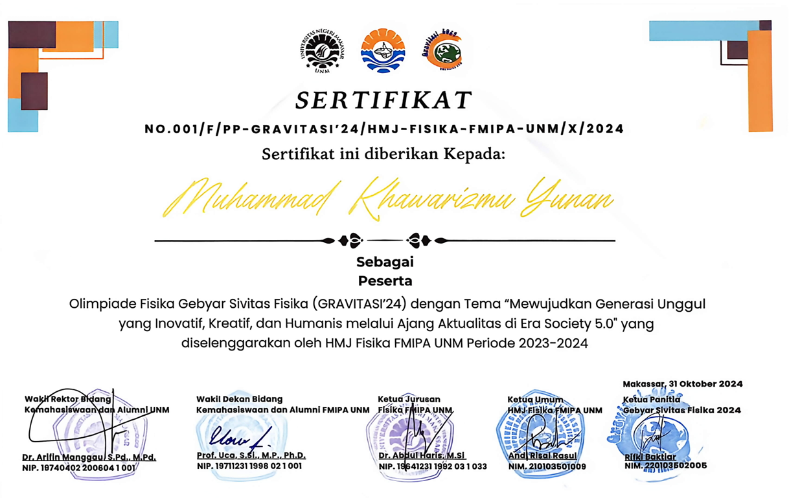
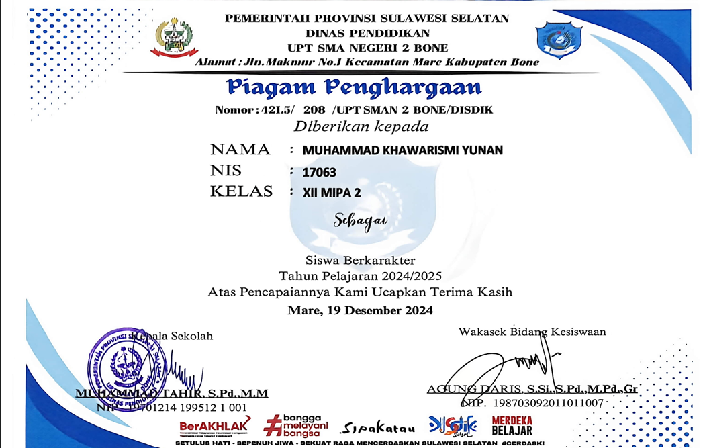
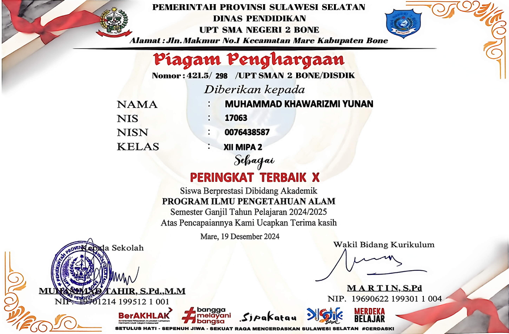
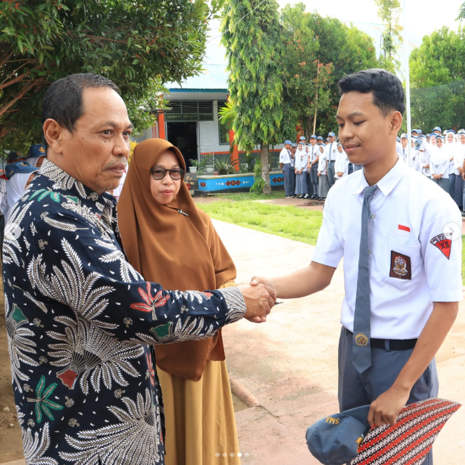
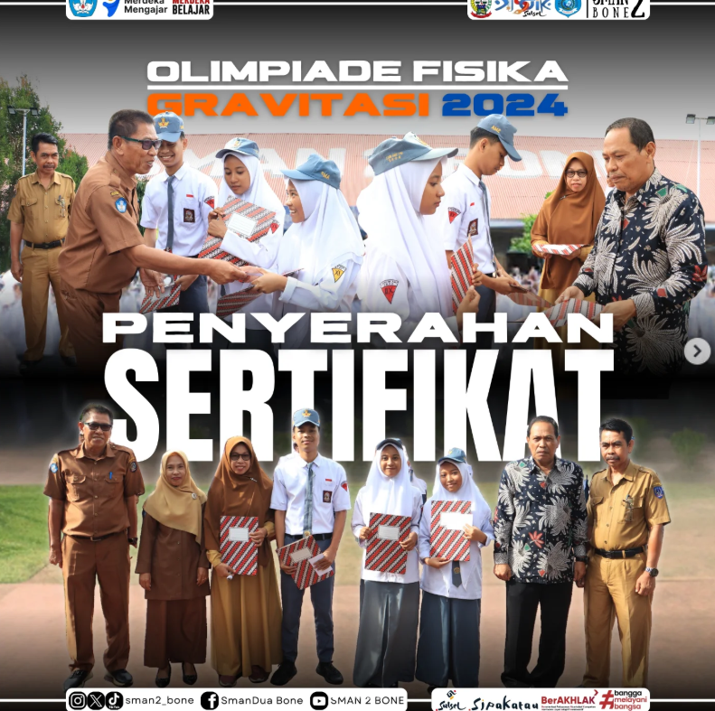
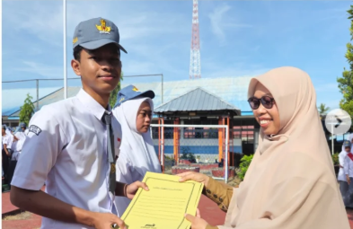
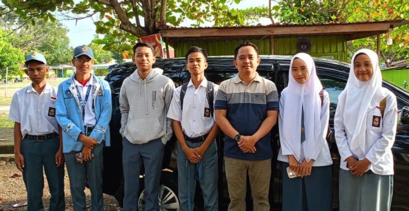

Tentang Saya
Halo, saya Rizmi
Saya adalah mahasiswa Teknik Komputer yang memiliki ketertarikan pada teknologi, pemrograman, dan web development. Saya senang mempelajari hal baru, mengembangkan berbagai proyek, serta mengasah kemampuan di bidang coding, desain, dan konten digital. Saya terus berusaha menjadi pribadi yang kreatif, adaptif, dan mampu menghasilkan karya yang bermanfaat.
Perjalanan
Pendidikan & Pengalaman
2025-Sekarang
Mahasiswa Teknik Informatika
Universitas Negeri Makassar
2022-2025
Siswa Sman 2 Bone
2019-2022
Siswa Mtsn 2 Jeneponto
Pencapaian
Penghargaan & Sertifikat
2024
Sertifikat Gravitasi UNM

2024
Sertifikat Siswa Berkarakter

2024
Sertifikat Siswa Terbaik

Dokumentasi
Galeri Kegiatan



